Un evento en Scratch puede definirse como una acción, como hacer clic en un objeto o presionar una determinada tecla. Las instrucciones de este bloque permiten iniciar un programa. Vamos a estudiar cada una de ellas:
Introducción a la programación
2.2.4. Eventos
Esta instrucción permite iniciar el programa de Scratch pulsando cualquiera de las teclas que se indican en la lista desplegable. Podremos elegir una letra (a-z), un número (0-9), o bien las teclas de espacio, flecha arriba, flecha abajo, flecha derecha o flecha izquierda. Si queremos que el programa empiece al pulsar cualquier tecla, habrá que seleccionar la opción cualquiera
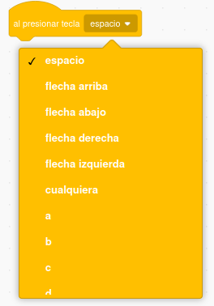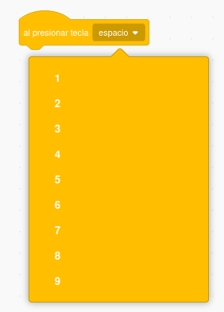
Crea un programa que realice lo siguiente:
- Si se pulsa la tecla 1, el personaje diga "Has pulsado el 1"
- Si se pulsa la flecha arriba, el personaje piense "¿Has pulsado la flecha arriba?"
- Si se pulsa la flecha espacio, el personaje diga "Se ha pulsado la tecla espacio"
Tarea
Implementa un programa siguiendo los siguientes pasos:
- Crea cuatro escenarios, uno que represente a cada estación (primavera, verano, otoño, invierno). Recuerda que las imágenes que uses deben ser libres de derechos. Puedes utilizar algún banco de imágenes como Pixabay
- Usa las instrucciones que necesites para que al pulsar cualquier tecla, el escenario cambie a la siguiente estación. Por ejemplo, si se está mostrando la imagen de la primavera y se pulsa cualquier tecla, se pase al verano. Si se vuelve a pulsar otra tecla, pasará al otoño y si se vuelve a seleccionar otra, al invierno. El programa debe ser un ciclo. Es decir, del invierno debe pasar a la primavera
La instrucción 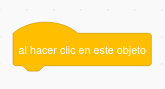 permite iniciar un programa pulsando con el ratón sobre el objeto.
Crea un programa que tenga tres personajes distintos. Cada uno de ellos dirá un mensaje distinto cuando hagamos clic en él (el primero dirá "Hola", el segundo pensará "¿Ha pulsado sobre mí?" y el tercero dirá "Adiós"
Este comando iniciará un conjunto de instrucciones cuando se cumpla una determinada condición. Scratch admite dos posibilidades:
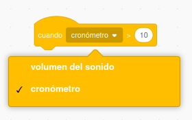La primera opción de este bloque permite realizar alguna acción cuando el volumen del sonido llegue a un valor determinado. Por ejemplo, si usamos el siguiente código
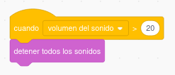Podremos detener todos los sonidos cuando se alcance un volumen de 20. Esto permitiría establecer un valor máximo para el volumen.
La segunda opción es similar, pero haciendo referencia al cronómetro. Este comando es útil si queremos mandar algún mensaje de aviso relacionado con el tiempo. Por ejemplo, con el siguiente código el objeto mostraría el mensaje "Se ha acabado el tiempo" cuando el cronómetro fuese mayor de 20
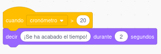
Vamos a implementar un programa para ver cómo funciona la instrucción cuando. Inserta los siguientes bloques en Scratch:
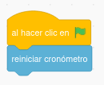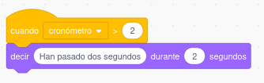
Responde a las siguientes preguntas:
- ¿Qué hace el programa?
- Realiza las modificaciones que necesites para que el mensaje se muestre pasados seis segundos
Este bloque de instrucciones permite que los objetos y los escenarios se comuniquen entre sí mediante el paso de mensajes. Un mensaje es un evento que se envía desde un personaje a otro (o a un escenario) para que sepa que ha ocurrido algo que le interesa. Tenemos tres comandos posibles:
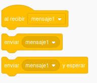El primero (al recibir...) permite establecer qué acciones va a realizar un personaje cuando se reciba un determinado mensaje. Las dos instrucciones siguientes permiten enviar un mensaje. La diferencia entre una y otra es que en el tercer caso el personaje envía el mensaje y espera.
Crea un programa con las siguientes características:
- Un objeto principal (el que quieras): personaje1
- Un objeto secundario: personaje2
El personaje1 va a enviar un mensaje al personaje2. Para ello, incluye el siguiente código:
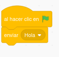
Si presionamos en la bandera verde, el personaje1 manda el mensaje "Hola" al personaje2. De momento, si pruebas el programa éste aparentemente no hace nada. Necesitamos que el personaje2 responda. Para ello, incluye este código en personaje2:
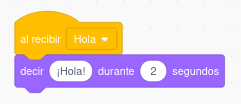
Ejecuta el programa ahora y responde a las siguientes preguntas:
- ¿Qué hace el programa?
- Incluye las instrucciones que necesites para que el personaje2 envíe un mensaje de despedida al personaje1 cuando se pulse la tecla espacio. El personaje1 deberá responder "Adiós"
Tarea
Vamos a implementar un juego en el que hay que adivinar el número en el que está pensando el personaje. Para ello:
- Crea tres escenarios: uno con el formato que quieras, otro con el texto "Has ganado" y otro con el texto "Game over"
- Tienes que tener tres personajes:
- El principal
- Uno que denote acierto
- Otro que exprese fallo
- El programa se inicia pulsando la bandera verde
- Los objetos de acierto y fallo no se verán
- Se muestra solo el personaje principal, que dirá al usuario: "¿Adivinarás el número en el que estoy pensando? ¡¡¡Pulsa el número y lo sabrás!!!"
- Piensa un número.
- Si el usuario pulsa ese número, el escenario pasará a "Has ganado", el personaje principal se ocultará y se mostrará el objeto que muestra alegría
- Si el usuario ha fallado, entonces se mostrará el texto "Game over". El personaje principal se ocultará y se mostrará el objeto que muestra tristeza o error
- Comprueba que el programa funciona correctamente y que siempre que pulses la bandera verde, el juego se inicia mostrando el escenario inicial y el personaje principal (el resto de objetos estará oculto)
Obra publicada con Licencia Creative Commons Reconocimiento Compartir igual 4.0